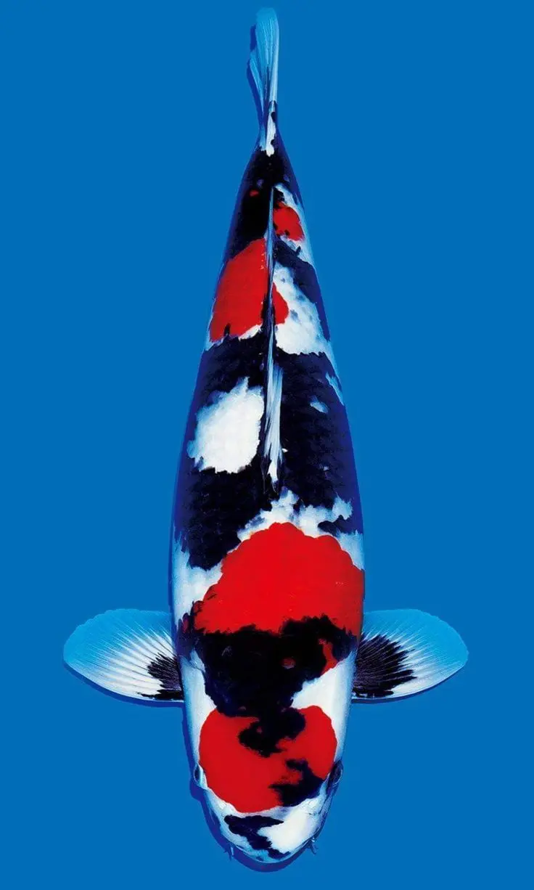
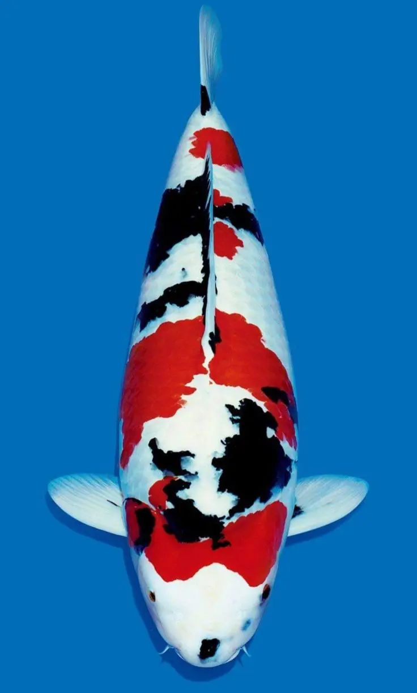

Mengenal Showa
Showa Sanshoku atau biasa disebut Showa adalah koi dengan perpaduan warna hitam, merah, dan putih. Showa memiliki karakter dasar hitam sehingga pola sumi dapat muncul di kepala dan membungkus tubuh hingga melewati garis samping.

Ciri utama Showa
Bagian kepala menjadi salah satu daya tarik terpenting. Showa yang menarik biasanya mempunyai perpaduan tiga warna dengan pola sumi yang tegas. Pola hitam yang seolah membelah kepala dikenal sebagai menware atau hachiware.
Ciri lainnya adalah motoguro, yaitu warna hitam pada pangkal sirip dada. Motoguro yang seimbang pada kedua sirip dapat memperkuat penampilan Showa.
Showa Tradisional dan Kindai Showa
Showa Tradisional mempunyai karakter sumi yang lebih dominan dan kuat. Sumi biasanya terlihat jelas di kepala, badan, serta pangkal sirip dada, sementara hi dan shiroji menyeimbangkan pola.
Kindai Showa menampilkan shiroji yang lebih luas sehingga kesannya lebih terang dan modern. Sumi tetap penting, tetapi hadir sebagai penegas pola agar perpaduan tiga warnanya tetap seimbang.
- Showa Tradisional: sumi lebih dominan, tampilannya kuat, dan motoguro biasanya terlihat jelas.
- Kindai Showa: shiroji lebih dominan, tampilannya lebih terang, dengan sumi sebagai penyeimbang.

Tiga hal saat memilih Showa
- Pilih bentuk badan yang panjang, proporsional, dan bervolume.
- Cari keseimbangan hi, sumi, dan shiroji dari kepala sampai ekor.
- Jangan hanya menilai banyaknya sumi—perhatikan kualitas warna, posisi pola, dan potensi perkembangannya.
Warna hitam dapat menguat, berubah, atau muncul lebih jelas seiring pertumbuhan dan kondisi pemeliharaan. Memilih Showa juga berarti belajar membaca potensinya.
Showa yang baik bukan sekadar koi tiga warna. Daya tariknya muncul dari karakter sumi, pola kepala, motoguro, bentuk badan, dan keseimbangan seluruh warna.